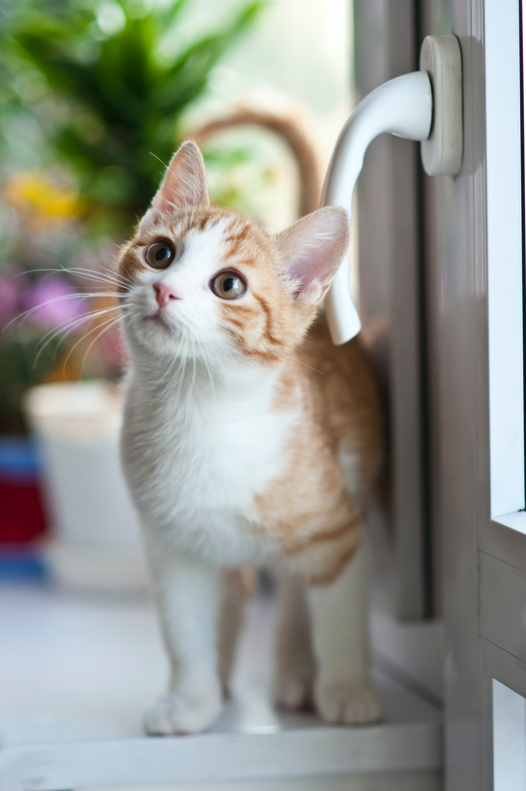

Orange Kitten
An orange kitten looking away to play with something. Orange cats are known to be spontaneous yet also sweet. They are also known to be a bit lacking thought compared to other breeds.

The spiral of the Milky Way Galaxy can only be seen so brightly in places with low light pollution, like in the countryside. Yet, it cannot be seen to the naked eye like in this image. Only through camera exposure.

This lush green forest gives off feelings of loneliness but at the same time this sense of nostalgia. Many people can be seen roaming in the background